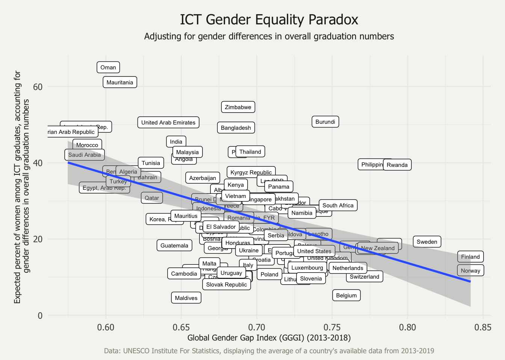
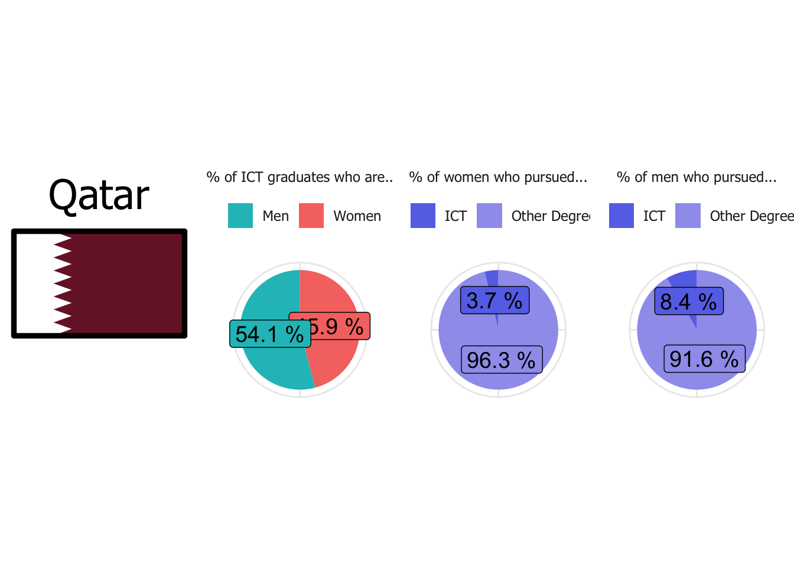
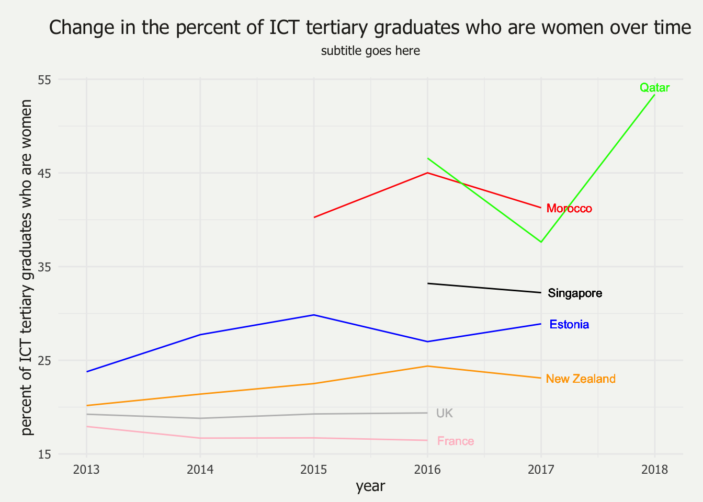
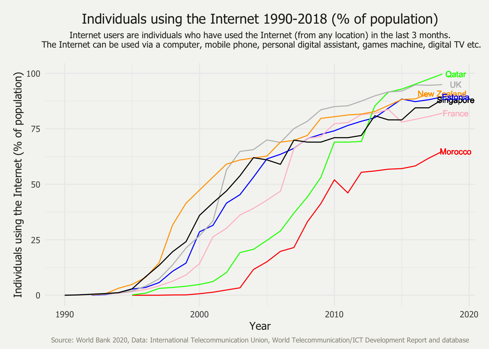
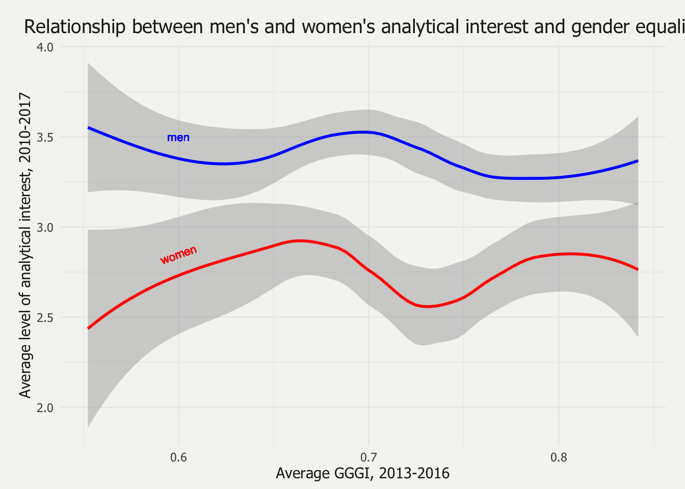
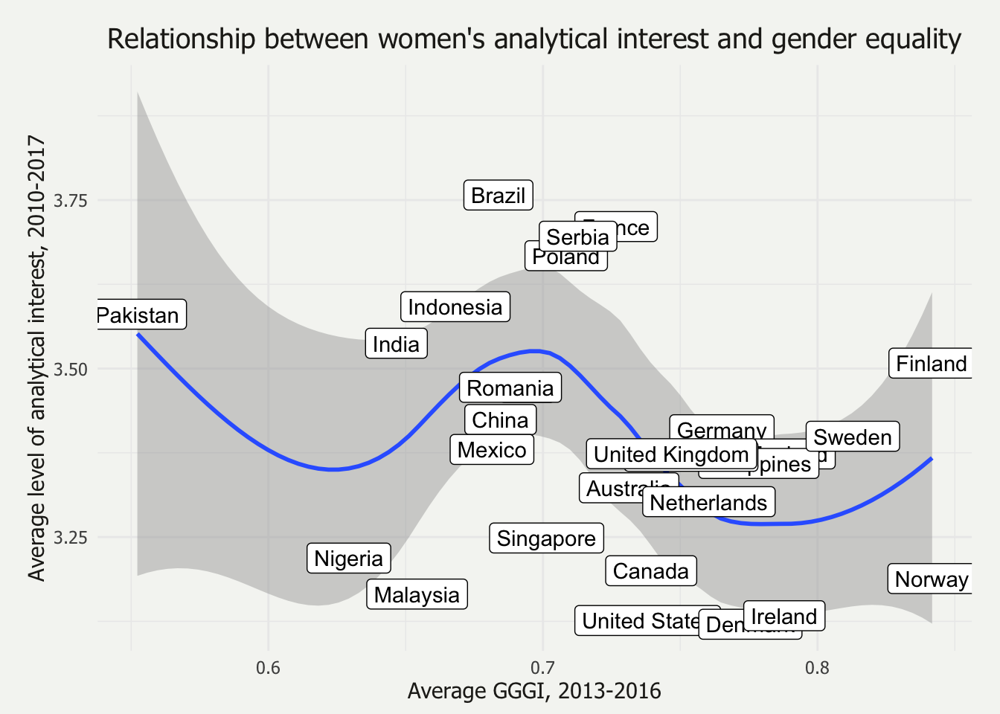

ICT Gender-Equality Paradox
2020-10-08
Chapter 1 Exploratory Data Analysis
1.1 The Paradox
Gender equality (as measured by the Global Gender Gap Index) is moderately, negatively correlated with the percentage of women among ICT, adjusted for equal graduation numbers of men and women (\(r = -0.47\), \(p < 0.001\)).

1.2 ICT Graduation Rates in 7 Countries
[in progress] I am working on creating the visualization for all seven countries so that I can stack them and demonstrate the disconnect there can be between the overall ratio of men and women graduates and the percentage of all men and all women who pursue ICT.

1.3 ICT Graduation Trends (Change Over Time)
Less data than I would prefer, but that’s helpful info too!

1.4 Internet Usage
This is another reason I am so interested in comparing Qatar and Morocco.

1.5 Interest: Oregon Vocational Interest Scales (ORVIS) from the SAPA Project
A common argument for why the STEM and ICT Gender-Equality paradoxes might exist surrounds the level of interest women have in the subjects. In countries with a high level of gender equality, some argue, women are free to pursue what they truly are interested in, even if those fields are less lucrative.
In their controversial paper, Stoet & Geary examined this using the Programme for International Student Assessment (PISA) dataset. Interest is also important because of its relationship with achievement. The PISA data is valuable for understanding the interests of 15-year-olds who live in OECD countries, however, it lack insight on the interests of adults.
The Synthetic Aperture Personality Assessment (SAPA) collects data that can fill that gap. SAPA is an online survey created by Northwestern psychologist William Revelle that anyone with access to a web browser and internet connection can take (https://www.sapa-project.org/). The Oregon Vocational Interest Scales (ORVIS) are a component of SAPA.
The ORVIS contains seven total scales: Leadership, Organization, Altruism, Creativity, Analysis, Production, Adventure, and Erudation. The Analysis scale is the scale of interest for this research. Ten items compose this scale, all of which are positively scored. The items are as follows:
- Be a chemist
- Design a laboratory experiment
- Be a mathematician
- Explain scientific concepts to others
- Be a physicist
- Carry out medical research
- Be a scientific reporter
- Solve complex puzzles
- Develop a computer program
- Be a statistician
Of the people who took the SAPA test from August 18, 2010 through February 7, 2017, 219,728 indicated they are from a country that ended up having 500 or more subjects during that time period. These people form the final dataset used for analysis. Participants choose between “male” and “female” to select their gender identity, with \(63.52\%\) (\(N = 139,567\)) identifying as female and the other \(36.48\%\) (\(N = 80,162\)) identifying as male. The median age of the particpants is 22, ranging from 14 to 90.
Below is a visualization of how these participants scored on their level of analytical interest.

Next up is the same graph, but only for women’s interest and with country names included for reference.

What does this mean? I don’t know (yet). There seems to be no clear correlation like that of the ICT-GEP. However, it almost appears that men’s and women’s interest are inversely proportional, which is a really interesting lead, as men’s and women’s interest are theoretically independent and have no cap. Contrast this to the proportion of men and women there are in a given classroom—the proportions are dependent upon one another, so we would expect this relationship. In this situation, however, a relationship like this is not expected (without considering the broader context).